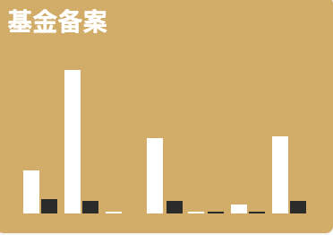
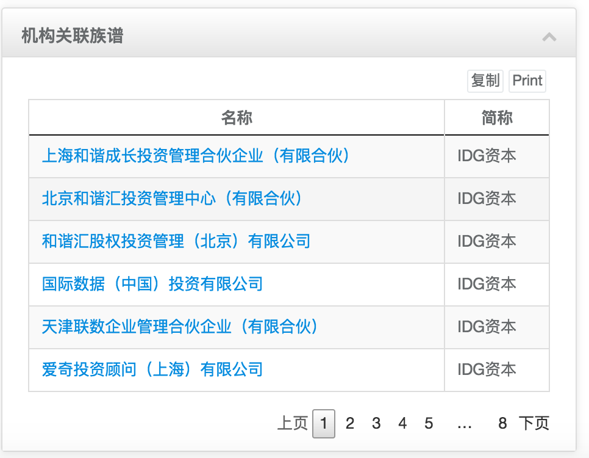
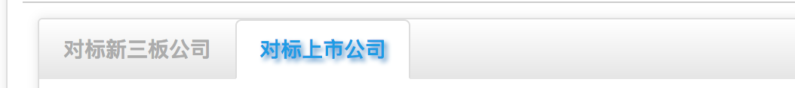
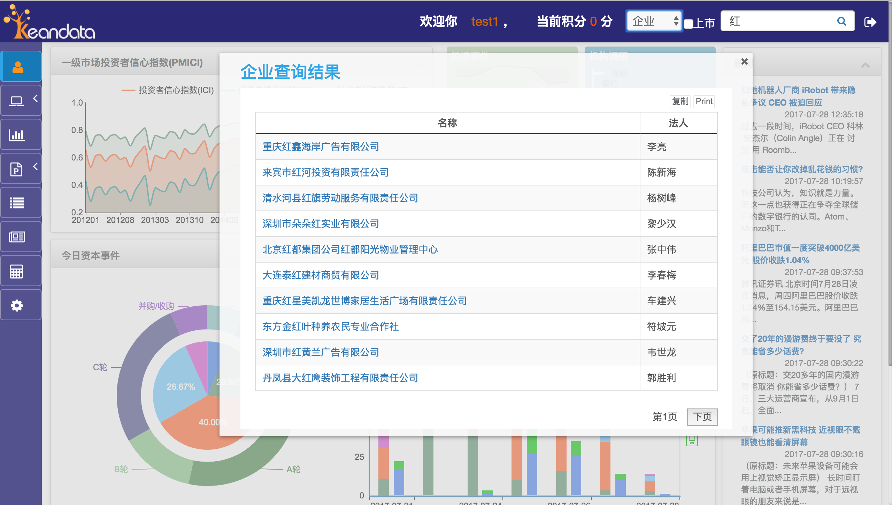

用户手册 V1.0
一、产品简介：
什么是Keandata?
Keandata希望为国内外股权投资从业人员提供专业、高效的数据服务。
Keandata为不同类型目标客户提供专业性的系统级解决方案。
Keandata 提供国内外股权投资市场新闻情报、股权交易、企业财务、行研成果、行业数据等各个层面信息；并且通过具有自主知识产权的数值模型对企业的发展进行评定、对投资机构进行资质鉴定、筛选创业项目、预测并购交易中的交易信号等； LP信息及投资偏好、历史投资记录等统计数据；活跃 VC/PE机构投资策略及投资趋势研究分析；行业分析及研究报告。
Keandata的优势
及时、自动的市场监控
全网实时监控行业情报和数据、及时呈现给用户结构化的数据和分析结果、提前预警关键情报及流言
精准、全面的行业洞察
准确的国内外投融纪录、全面的企业实体信息、完整的热点领域专题研究、多元化数据统计
专业、深度的趋势分析
厘清机构和企业的关系图谱、分析呈现不同形式的行业趋势、辨识潜在的资本交易信号、利用模型智能评估交易的合理性和可能性
二、使用指南
首页
用户主页
用户主页主要用折线、条形图、饼状图、仪表盘等各种图表清晰的描绘近期投退事件、并购事件的数量以及趋势，让用户更直观准确的 把握一级市场的最新的趋势，更提供了投资者信息指数、投资者满意指数、投资者逾期指数等，对市场将要出现的趋势做出了预测， 给用户提供参考。 更推出了辅助功能新闻的推荐和近期日程的安排,方便用户快捷浏览最新的市场动态信息以及最近的日程安排。
（1）一级市场投资者信心指数，包括投资信心指数、投资满意指数和投资预者期指数，预测行业将要出现的趋势给投资者做为参考。
（2）投退事件（最近七天投资退出事件的数量以及趋势）。
（3）并购事件（最近七天对外投资数量、增资数量、发行股份购买数量以及协议转让数量和曲线对比）。
（4）机构调研（最近七天保险、银行、信托、资管、券商、私募的调研数量对比图）。
（5）基金备案（最近七天股权类和创业类基金备案数量对比图）

（6）今日资本事件，用饼状图展示了今日资本事件按照轮次划分的比例图， 以及条形图展示了一级市场和二级市场的对比
（7）今日新增统计，用油表盘项目、企业、研报、情报数量统计。
（8）辅助功能之相关新闻，为用户推送最新的相关新闻，让用户快速便捷的掌握市场动态。

（9）辅助功能之日程安排，用户可以简单明了的看到今后一段时间的各种会议安排。（蓝色选中为当天日期）
点击可显示当天的日程详情，（如下图，点击7月25呈现出当天的日程会议）。
监控
根据工具-工作台- 监控设置进行自定义（手册六部分详细提到设置方式），即可得到所需查询的机构或企业等信息，包括投资事件、对象、具体的投资关系等。
1、系统监控
系统监控分为上市公司并购事件每日监控和股权类投资基金监控，监控着市场上最新创建的股权类投资基金，监控着每日上市公司并购事件。
（1）股权类投资基金监控
（2）上市公司并购事件每日监控
在上市公司并购事件每日监控中，点击事件的详情（如下图），展现当前并购事件的基本信息、买卖详情、并购详情。
2、定制监控
根据不同的用户，不同的需求，对客户关注的投资人、企业和机构进行监控，让用户实时掌握自己关注的投资人、企业和机构的动态。
可以通过右上角的选项框来选择当前展示关注企业或者机构。
可以通过点击当前选中、其他、被投资企业、关键企业来进行图例选择。刷新按钮表示恢复原图，开关项控制是否显示文字简介。
上下滑动通过控制二级企业所投资企业的关联度来调整企业关系图谱。
（1）企业的监控
企业关系图谱
企业基本信息
（2）机构的监控，机构监控分为三个部分，机构关系树状图、机构投资事件和机构关系图谱。
机构与企业之间的关系图谱（如下图），更直观明了的展现机构与相关的企业。用户还可以用个监控源、当前点、普通点、扩展点进行筛选浏览。
机构投资事件，展示了该机构投资的详情
机构关系列表，（如下图）和IDG资本这个机构相关联的公司

行业统计表
通过输入查询条件，获取所需要查询的信息（如图所示)，输入”互联网” ，即可获取和 互联网相关的行业列表，点击行业，展示这个行业的相关统计信息。通过表格的方式展示近几年相关行业的信息对比，为市场参与者提供研究服务,方便投资者分析跟踪相关指数。
报告
报告部分包括行业分析报告即行业的月报、季报、半年报、年报等多种热门行业报告；以及券商类的多种热门领域的研究报告
1、行业分析
（1）可根据搜索框输入搜索条件（如行业、时间、类别、题目等等）
2、研究报告
（1）可根据搜索框输入搜索条件（如行业、时间、类别、题目等等）
项目
用户在搜索栏填写关键字，选择相关行业分类（可选），点击确定即可。
在搜索结果页面还可以通过点击项目查询条件的按钮（如下图）来编辑项目查询条件
新闻
行业相关新闻列表，默认按照时间最新排序
默认是无关键词搜索，搜索结果按照时间排序
通过输入关键字查询条件，获取所需要查询的信息（如图所示，输入”投资” ，即可获取和 互联网相关的新闻、研究报告和项目信息。

通过选择行业进行筛选，获取所需要查询的信息（如图所示，选择”互联网” ，即可获取和 互联网相关的新闻、研究报告和项目信息。
点击项目信息的公司名，跳转到公司详情页面
模拟计算
该模块具有较高的保密性，用户只需填写目标企业相关参数，无需填写具体名称，点击查询，即可查询目标企业对标新三板公司及上市公司。输入目标参数（如下图）后，点击确定进行模拟计算，经营范围是必填项
模拟计算的结果分为对标新三板公司和对标上市公司
点击公司名称，进入公司详情页面

工具
工具部分包括行业分析、研究报告和监控设置，用户可根据自己的需求添加监控对象。
（1）行业分析
点击添加键，根据个人需求填写相关参数点击确定即可。（包括行业类型和时间类型）
（2）研究报告
点击添加键，根据个人需求选择研报类型及时间类型，点击确定即可。
（3）监控设置
3、监控设置
点击添加键，用户可根据所需选择监控对象（包括企业及机构），输入关键字，并选择监控对象，点击确定即可。另，该部分目前仅支持3条监控设置，如有帮助可联系客服。
检索
用户根据所需在对话框内填写关键字，按“回车” 键，即可查询相关统计表。
（1）选所有进行关键词搜索
（2）在投资者中进行关键词搜索，如下图所示，输入 “马云” ，即可展示名字中含有马云的投资者。
（3）在机构中进行关键词搜索，如下图所示，输入 “红” ，即可展示机构名称里面含有红的投资机构。
（4）在企业中进行关键词搜索，如下图所示，输入 “红” ，即可展示企业名中含有红的企业。
